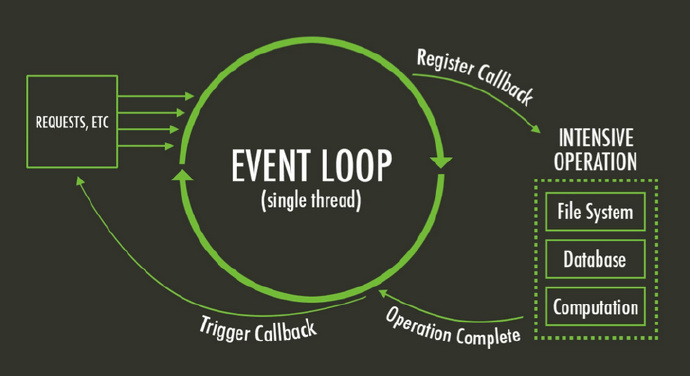

事件循环
"Event Loop是一个程序结构，用于等待和发送消息和事件。（a programming construct that waits for and dispatches events or messages in a program.）"

事件和事件处理器
在事件循环里，有两个主要角色：
事件本身
事件处理器，即这些事件的订阅者
事件，可以是十分底层的操作系统事件，如“文件已经准备好被写入”或“收到了一个新的HTTP请求”。事件处理器，则是当指定事件触发时，执行的一段代码。
#
 事件循环的职责，就是不断得等待事件的发生，然后将这个事件的所有处理器，以它们订阅这个事件的时间顺序，依次执行。当这个事件的所有处理器都被执行完毕之后，事件循环就会开始继续等待下一个事件的触发，不断往复。
事件循环的职责，就是不断得等待事件的发生，然后将这个事件的所有处理器，以它们订阅这个事件的时间顺序，依次执行。当这个事件的所有处理器都被执行完毕之后，事件循环就会开始继续等待下一个事件的触发，不断往复。
当同时并发地处理多个请求时，以上的概念也是正确的，可以这样理解：在单个的线程中，事件处理器是一个一个按顺序执行的。
即如果某个事件绑定了两个处理器，那么第二个处理器会在第一个处理器执行完毕后，才开始执行。在这个事件的所有处理器都执行完毕之前，事件循环不会去检查是否有新的事件触发。在单个线程中，一切都是有顺序地一个一个地执行的！
Node.js 中的事件循环
Node采用V8作为JavaScript的执行引擎，同时使用libuv实现事件驱动式异步I/O。其事件循环就是采用了libuv的默认事件循环。 在src/node.cc中，
Environment* env = CreateEnvironment(
node_isolate,
uv_default_loop(),
context,
argc,
argv,
exec_argc,
exec_argv);
这段代码建立了一个node执行环境，可以看到第三行的uv_default_loop()，这是libuv库中的一个函数，它会初始化uv库本身以及其中的default_loop_struct，并返回一个指向它的指针default_loop_ptr。 之后，Node会载入执行环境并完成一些设置操作，然后启动event loop：
bool more;
do {
more = uv_run(env->event_loop(), UV_RUN_ONCE);
if (more == false) {
EmitBeforeExit(env);
// Emit `beforeExit` if the loop became alive either after emitting
// event, or after running some callbacks.
more = uv_loop_alive(env->event_loop());
if (uv_run(env->event_loop(), UV_RUN_NOWAIT) != 0)
more = true;
}
} while (more == true);
code = EmitExit(env);
RunAtExit(env);
more用来标识是否进行下一轮循环。 env->event_loop()会返回之前保存在env中的default_loop_ptr，uv_run函数将以指定的UV_RUN_ONCE模式启动libuv的event loop。在这种模式下，uv_run会至少处理一个事件：这意味着，如果当前事件队列中没有需要处理的I/O事件，uv_run会阻塞住，直到有I/O事件需要处理，或者下一个定时器时间到。如果当前没有I/O事件也没有定时器事件，则uv_run返回false。
接下来Node会根据more的情况决定下一步操作：
如果more为true，则继续运行下一轮loop。
如果more为false，说明已经没有等待处理的事件了，EmitBeforeExit(env);触发进程的'beforeExit'事件，检查并处理相应的处理函数，完成后直接跳出循环。
最后触发'exit'事件，执行相应的回调函数，Node运行结束，后面会进行一些资源释放操作。
在libuv中，event loop会在每次循环的开始更新自己的time从而实现计时功能，而I/O事件则分为两类：
Network I/O是使用系统提供的非阻塞式I/O解决方案，例如在Linux上使用epoll，windows上使用IOCP。
文件操作和DNS操作没有（很好的）系统解决方案，因此libuv自建了线程池，在其中进行阻塞式I/O。
另外我们也可以将自定义的函数抛到线程池中运行，在运行结束后主线程会执行相应的回调函数，不过Node并没有将这一项功能加入到JavaScript中，也就是说只用原生Node是无法在JavaScript中开启新的线程进行并行执行的。